Takarazuka, Hyogo: things to do, food and stays
Takarazuka · Hyogo
Takarazuka
Highlighted on the Hyogo map.
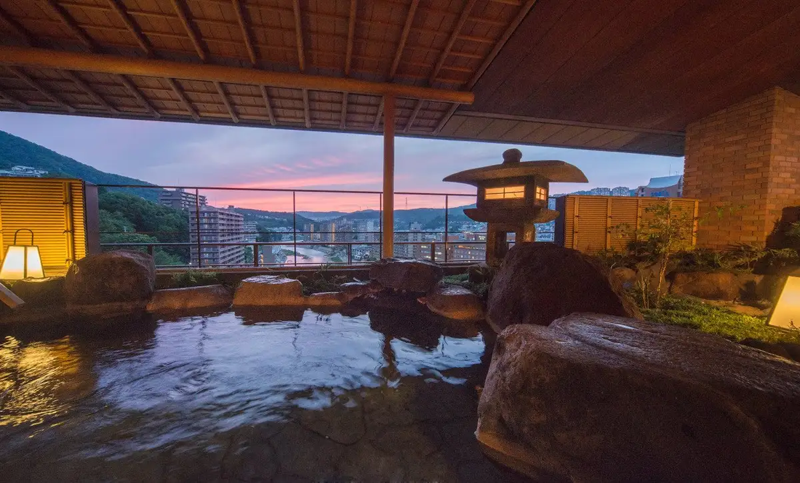
Stay
武田尾温泉 紅葉舘 別庭 あざれ
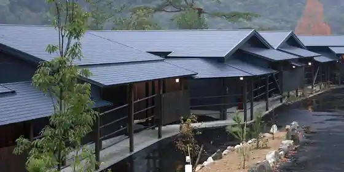
Takedao Onsen Koyo Kan Betsu Niwa Azare
Inn at Takedao Onsen in Tamase, Takarazuka with free-flowing hot spring baths.
ホテル若水
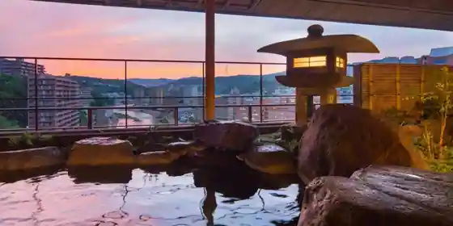
Hotel Jakusui
Hotel at Takarazuka Onsen in Yumoto, Takarazuka with parking; 5-minute walk from Toiyashichushajomuryotakarazuka Station.
宝塚ホテル
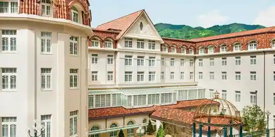
Takarazuka Hotel
宝塚ワシントンホテル
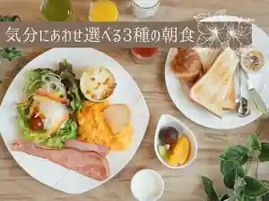
Takarazuka Washington Hotel
Hotel in Sakae, Takarazuka with a large communal bath; 1-minute walk from (Hankyutakarazuka Station.
Dining
ラーメン ロケット開発
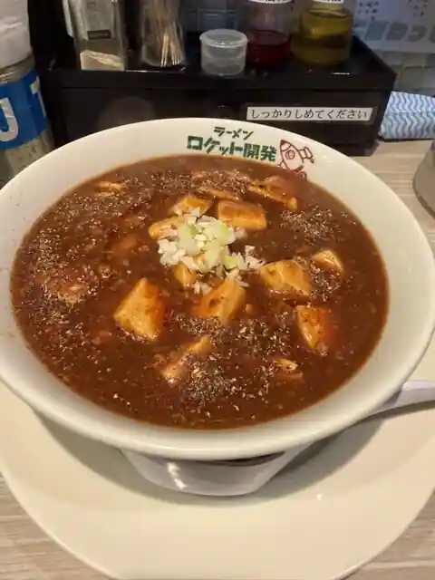
Ramen Roketto Kaihatsu
寶菓匠 菅屋 山本店
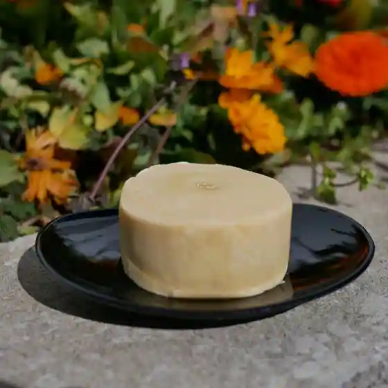
Takara Kasho Sugaya Yamamoto
魚の松本
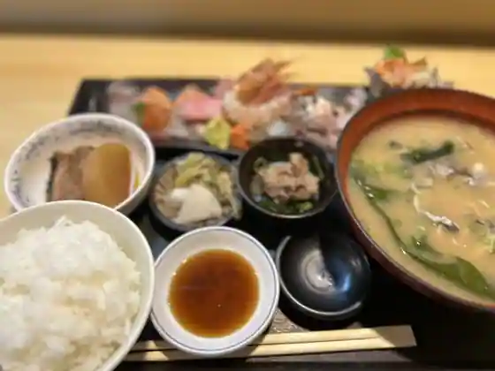
Sakana No Matsumoto
サンドウィッチ ルマン 宝塚南口本店
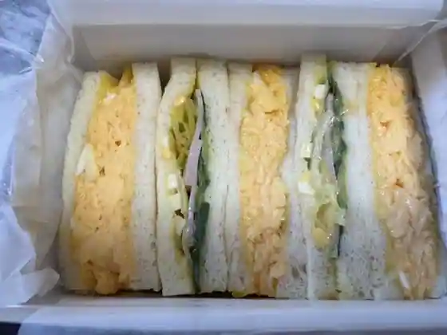
Sandouitchi Ruman Takarazukaminamiguchi Hon
サンドウィッチ ルマン 花のみちセルカ店
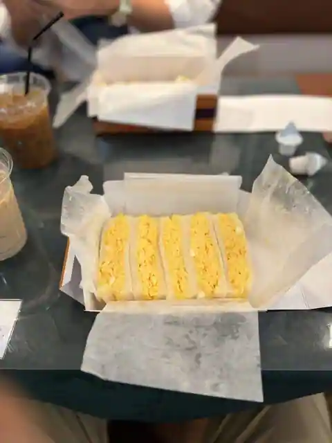
Sandouitchi Ruman Hana Nomichi Seruka
まるさん松本
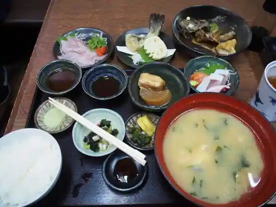
Marusan Matsumoto
らーめん もんつきかかか
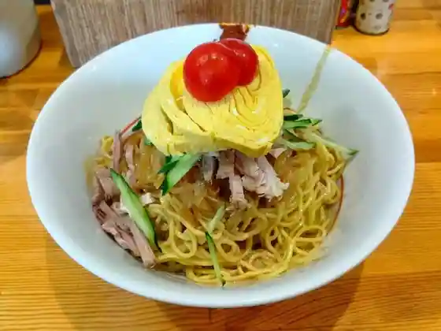
Ramen Montsukikakaka
フランケル
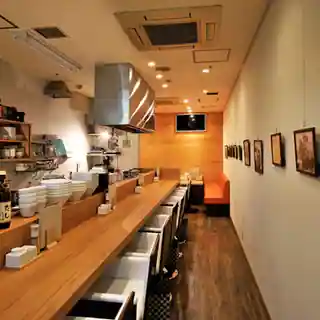
Furankeru
かつ丼 桜花
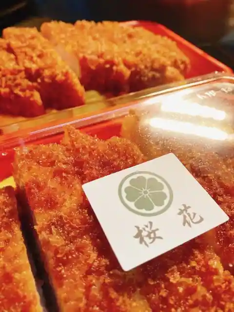
Katsu Donburi Oka
ティーハウス サラ
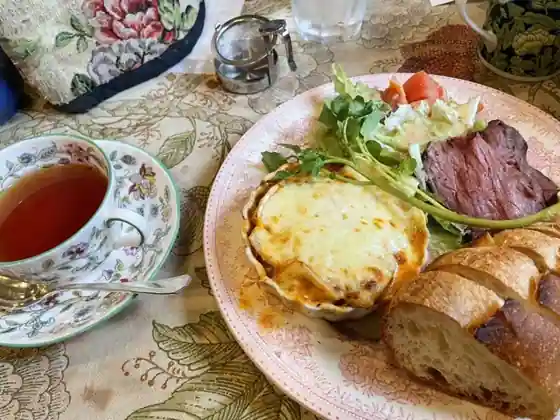
Tei House Sara
こばん鮨 本店
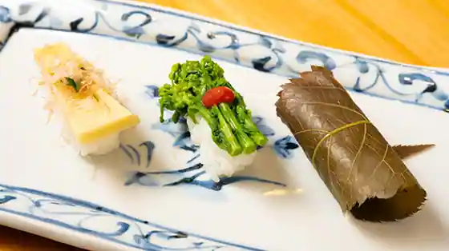
Koban Sushi Hon
ピッツェリア エ トラットリア ダ・マサニエッロ
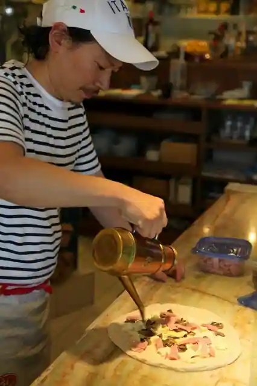
Pizzeria E Trattoria Da Masanierro
グラタンのお店 どつぼどーる
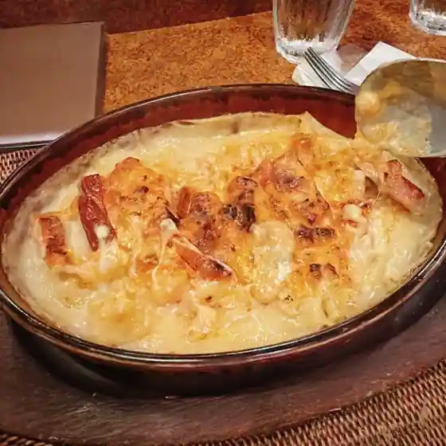
Guratan No Dotsubodoru
宝麺 えびす丸
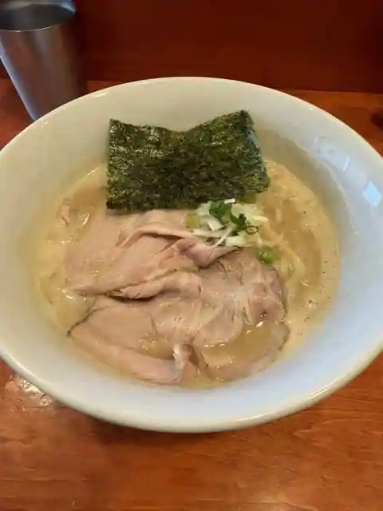
Takara Men Ebisu Maru
鉄板焼 風雅
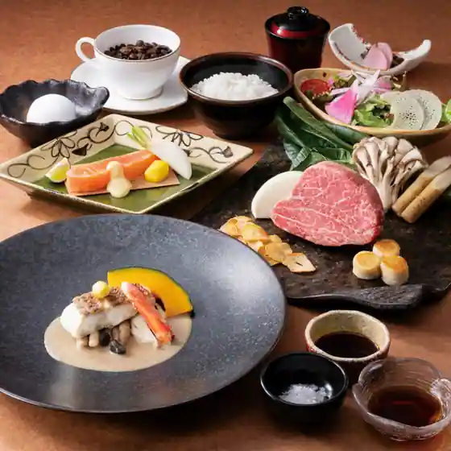
Teppanyaki Fuga
地酒と和中華 大石清
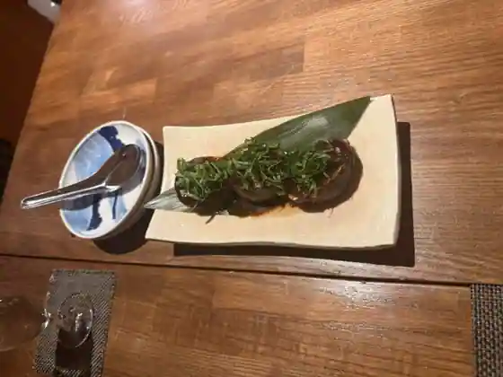
Jizake To Wachu Hana Oishi Kiyoshi
パティスリー ミラヴェイユ
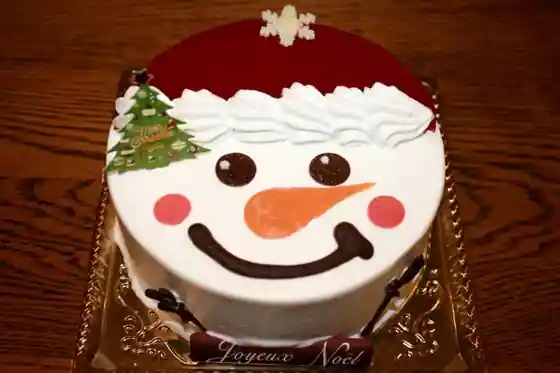
Pateisuri Miraveiyu
しぇからしか 仁川本店
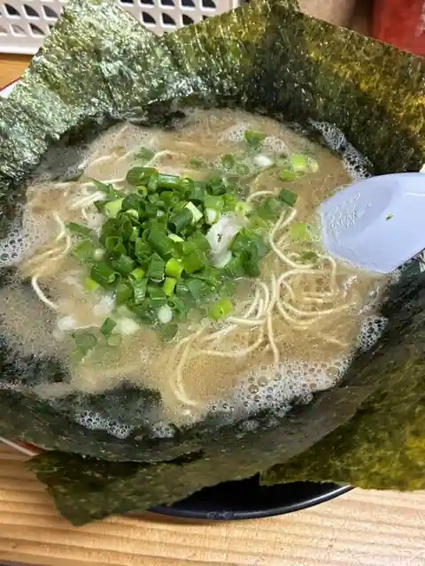
Shiekarashika Nikawa Hon
うなぎ処 うな富 宝塚本店
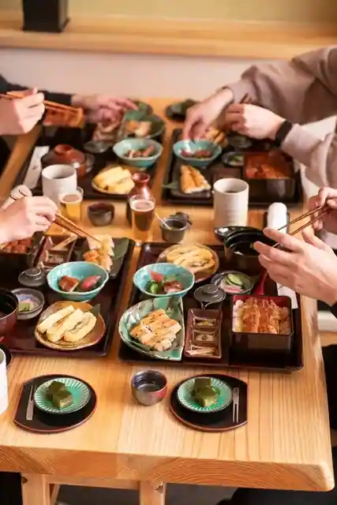
Unagi Tokoro Una Tomi Takarazuka Hon
たからづか牛乳 ソリオ宝塚店
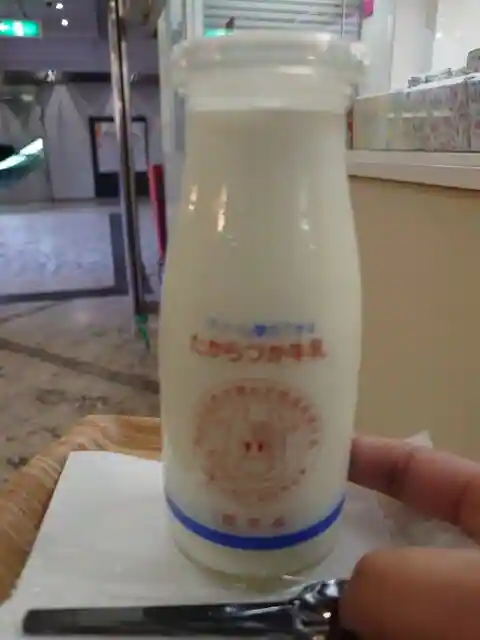
Takarazuka Gyunyu Sorio Takarazuka
焼肉処 一品一会 小林店
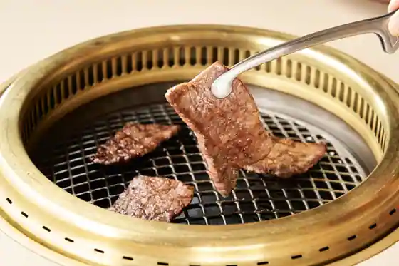
Yakiniku Tokoro Ippin Ichie Kobayashi
CONCENT MARKET to table
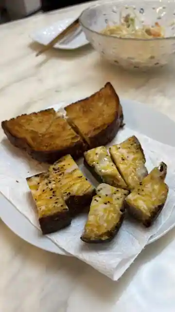
CONCENT MARKET to table
百合珈琲
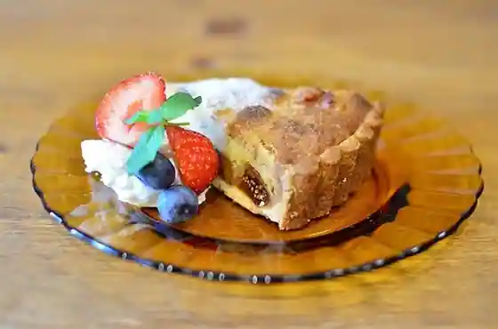
Yuri Coffee
たからづか牛乳 宝塚南口店
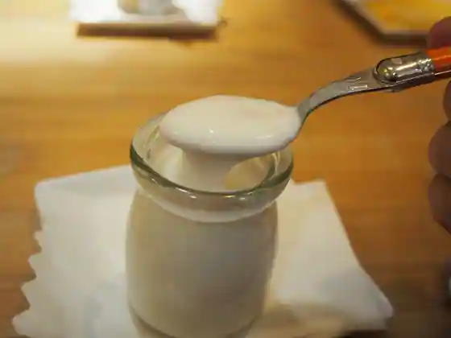
Takarazuka Gyunyu Takarazukaminamiguchi
Sights
Aiai Park
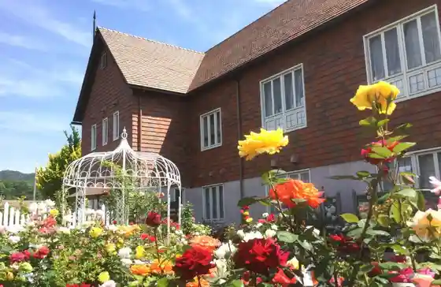
Takarazuka Ritsu Tezukaosamu Memorial Museum
Takarazuka Onsen
Takedao Onsen
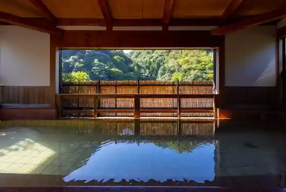